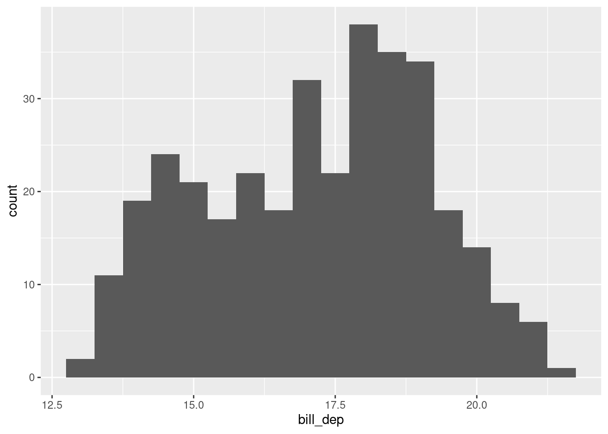
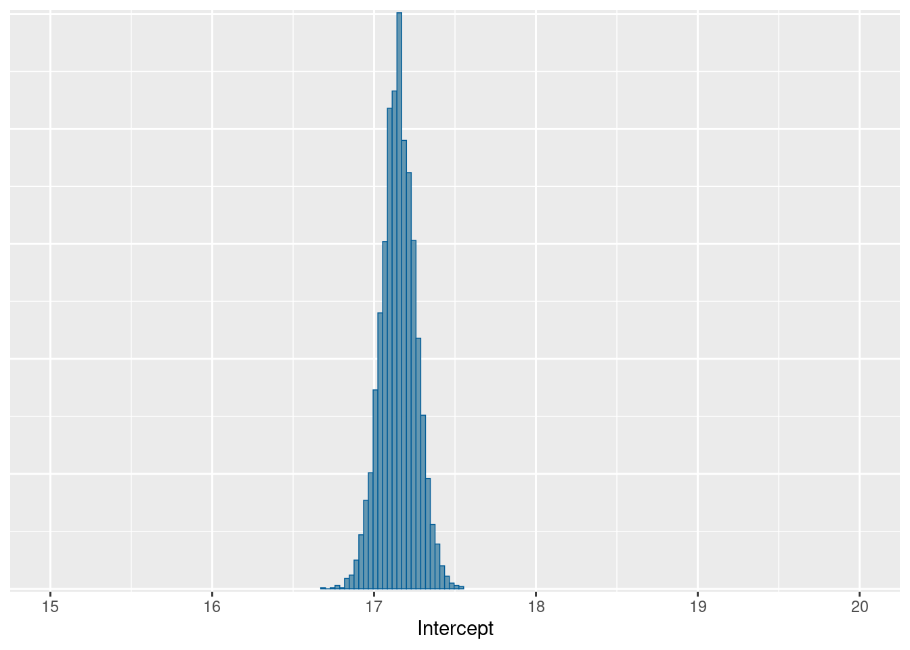
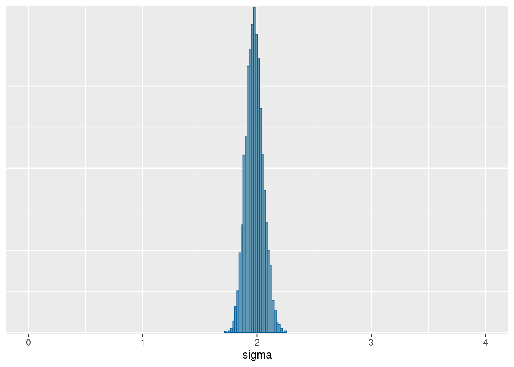
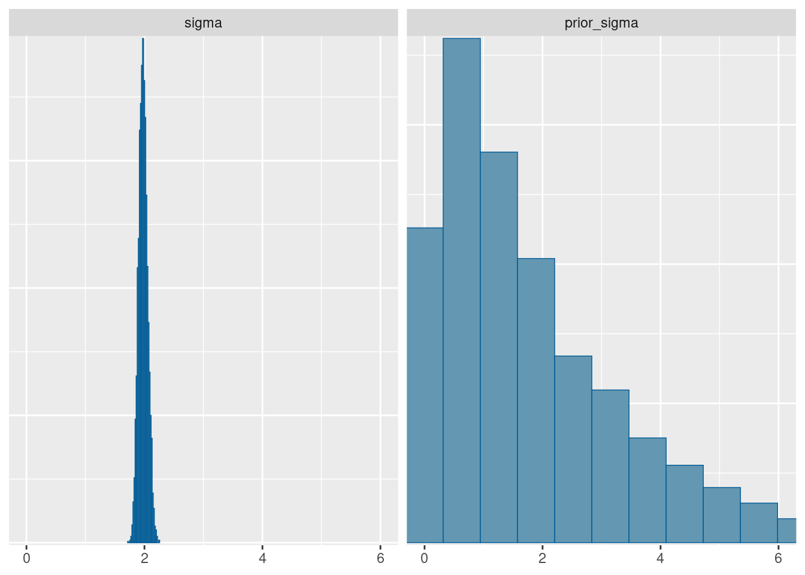
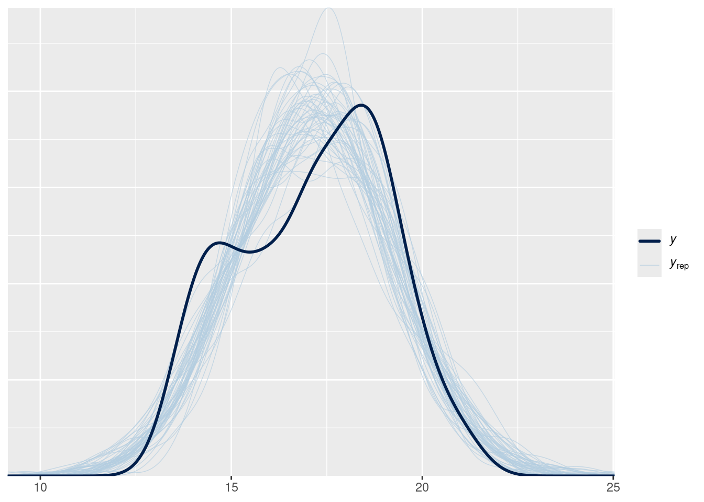
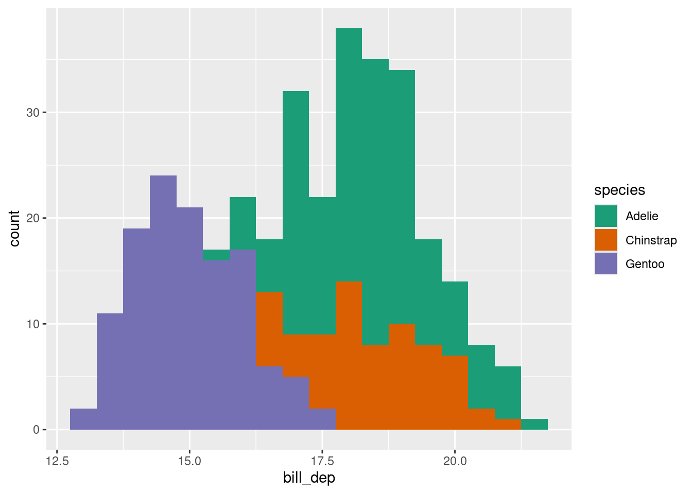
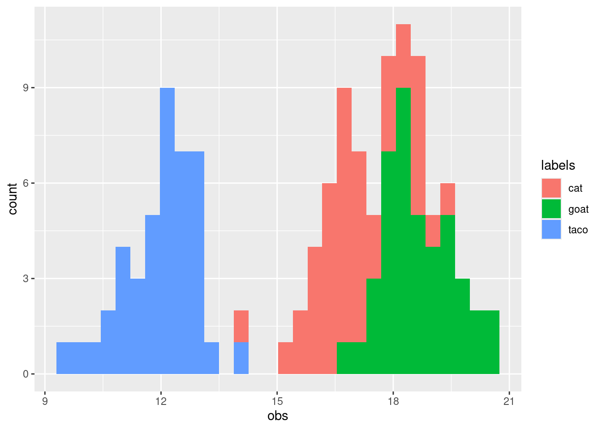
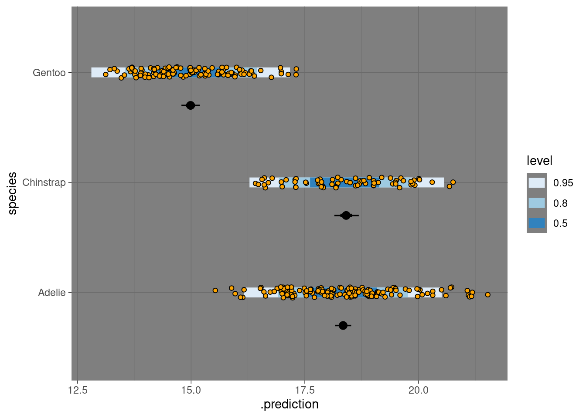

library(tidyverse)
suppressPackageStartupMessages(library(brms))
library(tidybayes)
Attaching package: 'tidybayes'The following objects are masked from 'package:brms':
dstudent_t, pstudent_t, qstudent_t, rstudent_tfitting a model with discrete predictors.
In this section we’re going to look at a simple model with a single predictor variable which divides the dataset into categories. In this example, categories are treated as “fixed” effects.
library(tidyverse)
suppressPackageStartupMessages(library(brms))
library(tidybayes)
Attaching package: 'tidybayes'The following objects are masked from 'package:brms':
dstudent_t, pstudent_t, qstudent_t, rstudent_tLet’s start by taking a look at the Palmer Penguin dataset, specifically the distribution of observations of bill size.
penguins |>
ggplot(aes(x=bill_dep)) +
geom_histogram(binwidth = .5)Warning: Removed 2 rows containing non-finite outside the scale range
(`stat_bin()`).
There’s quite a lot of variation in these measurements, with a suggestion of perhaps more than one peak in this distribution.
There’s also some NA values – we’ll drop them before we move on:
penguins_noNAbill <- penguins |>
drop_na(bill_dep)\[ \begin{align} \text{Bill depth} &\sim \text{Normal}(\mu, \sigma)\\ \mu &\sim \text{Normal}(17, 2) \\ \sigma &\sim \text{Exponential}(1) \\ \end{align} \]
let’s express the same model in brms:
## formula
bill_bf <- bf(bill_dep ~ 1, family = gaussian())
## prior
get_prior(bill_bf, data = penguins_noNAbill) prior class coef group resp dpar nlpar lb ub tag source
student_t(3, 17.3, 2.5) Intercept default
student_t(3, 0, 2.5) sigma 0 defaultbill_prior <- c(
prior(normal(17, 2), class = "Intercept"),
prior(exponential(.5), class = "sigma", lb = 0)
)
bill_prior prior class coef group resp dpar nlpar lb ub tag source
normal(17, 2) Intercept <NA> <NA> user
exponential(0.5) sigma 0 <NA> user## fit
bill_brm <- brm(bill_bf,
data = penguins_noNAbill,
prior = bill_prior,
sample_prior = "yes",
refresh = 0L,
file = here::here("topics/discrete_predictor/bill_brm.rds"),
file_refit = "on_change")
bill_brm Family: gaussian
Links: mu = identity
Formula: bill_dep ~ 1
Data: penguins (Number of observations: 342)
Draws: 4 chains, each with iter = 2000; warmup = 1000; thin = 1;
total post-warmup draws = 4000
Regression Coefficients:
Estimate Est.Error l-95% CI u-95% CI Rhat Bulk_ESS Tail_ESS
Intercept 17.15 0.11 16.94 17.36 1.00 2888 2591
Further Distributional Parameters:
Estimate Est.Error l-95% CI u-95% CI Rhat Bulk_ESS Tail_ESS
sigma 1.98 0.08 1.84 2.13 1.00 3354 2693
Draws were sampled using sampling(NUTS). For each parameter, Bulk_ESS
and Tail_ESS are effective sample size measures, and Rhat is the potential
scale reduction factor on split chains (at convergence, Rhat = 1).Some things to notice about the process and results above:
We can use the posterior package to extract and conveniently summarize the draws from the distribution.
## summarize the samples for each parameter into a nice table
bill_brm |>
posterior::summarise_draws() |>
knitr::kable()| variable | mean | median | sd | mad | q5 | q95 | rhat | ess_bulk | ess_tail |
|---|---|---|---|---|---|---|---|---|---|
| b_Intercept | 17.150936 | 17.150233 | 0.1071332 | 0.1037355 | 16.9752916 | 17.328560 | 1.0004088 | 2888.342 | 2590.755 |
| sigma | 1.978250 | 1.975331 | 0.0751664 | 0.0755603 | 1.8587321 | 2.107719 | 1.0003574 | 3354.310 | 2692.926 |
| Intercept | 17.150936 | 17.150233 | 0.1071332 | 0.1037355 | 16.9752916 | 17.328560 | 1.0004088 | 2888.342 | 2590.755 |
| prior_Intercept | 16.990264 | 16.989851 | 1.9953338 | 2.0734243 | 13.7275726 | 20.231049 | 0.9997240 | 3751.547 | 3766.682 |
| prior_sigma | 2.029725 | 1.425058 | 2.0517451 | 1.4376533 | 0.1083177 | 6.190085 | 0.9999286 | 3714.513 | 3796.457 |
| lprior | -3.298640 | -3.296940 | 0.0381071 | 0.0377788 | -3.3654329 | -3.237870 | 1.0006126 | 3311.303 | 2371.514 |
| lp__ | -721.102922 | -720.794259 | 1.0160055 | 0.7080779 | -723.1015945 | -720.162162 | 1.0032464 | 1666.202 | 2265.619 |
We don’t have one value for each of our unknown numbers: we have thousands. We need to get a sense of what these possible values mean scientifically. An excellent way to do this is by making as many pictures as possible. We will start with making plots of specific parameters.
We can look at the distributions easily using the bayesplot package.
bayesplot::mcmc_hist(bill_brm, pars = "Intercept") +
coord_cartesian(xlim = c(15, 20))`stat_bin()` using `bins = 30`. Pick better value `binwidth`.bayesplot::mcmc_hist(bill_brm, pars = "sigma") +
coord_cartesian(xlim = c(0, 4))`stat_bin()` using `bins = 30`. Pick better value `binwidth`.

Notice that the distributions do not have the same shape as the prior– this is particularly true for \(\sigma\).
bayesplot::mcmc_hist(bill_brm, pars = c("Intercept", "prior_Intercept")) +
coord_cartesian(xlim = c(10, 25))`stat_bin()` using `bins = 30`. Pick better value `binwidth`.bayesplot::mcmc_hist(bill_brm, pars = c("sigma", "prior_sigma")) +
coord_cartesian(xlim = c(0, 6))`stat_bin()` using `bins = 30`. Pick better value `binwidth`.

In my experience, ecologists (rightly!) care a great deal about model diagnostics. And with good reason: you need to know how much to trust a model before using it to make a scientific claim. Bayes offers a straightforward way to show how well a model is doing: plot model predictions, and compare them to the observed data. This involves using the model as a data generating machine, which we’ll look at next.
Here is the procedure for generating posterior predictions:
# just get some draws
draws_matrix <- posterior::as_draws_matrix(bill_brm)
## set up a matrix. for every posterior sample,
## (that is, for a value of mu and a value of sigma)
## draw a whole fake dataset from a normal distribution with that mean and sd.
nsamples <- 50
yrep <- matrix(0, ncol = length(penguins_noNAbill$bill_dep), nrow = nsamples)
# pick some random rows
set.seed(1234)
chosen_samples <- sample(1:nrow(draws_matrix),
replace = FALSE,
size = nsamples)
subset_draws <- draws_matrix[chosen_samples,]
for (r in 1:nsamples){
yrep[r,] <- rnorm(n = length(penguins_noNAbill$bill_dep),
mean = subset_draws[r, "Intercept"],
sd = subset_draws[r, "sigma"])
}
bayesplot::ppc_dens_overlay(y = penguins_noNAbill$bill_dep,
yrep = yrep)
This is the manual approach, which demonstrates the entire process explicitly. However, thanks to the power of brms, this can also be accomplished in a single line:
brms::pp_check(bill_brm, type = "dens_overlay", ndraws = 50)
Look at the other graphical posterior predictive checks available in the bayesplot package by examining the vignette. Experiment with some different possibilities for these data.
The posterior predictive distribution gives us a straightfoward way to test our model’s performance:
let’s add in differences among species
penguins |>
ggplot(aes(x = bill_dep, fill = species))+
geom_histogram(binwidth = .5) +
scale_fill_brewer(palette = "Dark2")Warning: Removed 2 rows containing non-finite outside the scale range
(`stat_bin()`).
Now we can see that the distribution is probably three different distributions, all placed together.
Sometimes scientists will plot histograms of data at the beginning of a research project, and use the histogram to decide if their data are “normally distributed” or not. This is not helpful! Instead, decide on a model first, and ask yourself what kind of data you expect.
Here we extend the model to give each species a different average bill depth. How many parameters are in this model?
\[ \begin{align} \text{Bill depth}_{i} &\sim \text{Normal}(\mu_{\text{species}[i]}, \sigma) \\ \mu_{\text{species}} &\sim \text{Normal}(17, 2) \\ \sigma &\sim \text{Exponential}(2) \\ \end{align} \]
A very useful technique, in both R and Stan, is transforming a vector with indexing. Vector indexing requires two vectors: the first contains values we want to select or replicate, the second contains integers giving the positions of the elements we want. For example:
some_values <- c("taco", "cat", "goat", "cheeze", "pizza")
positions <- c(1,1,2,2,3,1,1,5)
some_values[positions][1] "taco" "taco" "cat" "cat" "goat" "taco" "taco" "pizza"This works for number values as well, and is very useful when you want to do simulations! let’s simulate three groups with different averages.
set.seed(525600)
some_means <- c(12, 17, 19)
some_labels <- c("taco", "cat", "goat")
df_of_means <- data.frame(index = rep(1:3, each = 42)) |>
mutate(the_mean = some_means[index],
labels = some_labels[index],
obs = rnorm(n = length(the_mean),
mean = the_mean,
sd = 1))
df_of_means |>
ggplot(aes(x = obs, fill = labels)) +
geom_histogram()`stat_bin()` using `bins = 30`. Pick better value `binwidth`.
We can use this very same technique in Stan:
The only difference to the previous model is in the line with the for-loop, which is now replaced with a vectorized expression. This is faster to write and will run faster in Stan. However it’s not possible in every case.
Fit one the species-specific model above using brms. TIP: set the formula to be bill_dep ~ 0 + species. 1. What changes do you need to make to the prior? 2. Visualize the posterior with bayesplot. Does it look better than the model without species? How can you tell?
## formula
bill_spp_bf <- bf(bill_dep ~ 0 + species, family = gaussian())
## prior
get_prior(bill_spp_bf, data = penguins_noNAbill) prior class coef group resp dpar nlpar lb ub tag
(flat) b
(flat) b speciesAdelie
(flat) b speciesChinstrap
(flat) b speciesGentoo
student_t(3, 0, 2.5) sigma 0
source
default
(vectorized)
(vectorized)
(vectorized)
defaultbill_spp_prior <- c(
prior(normal(17, 2), class = "b"),
prior(exponential(.5), class = "sigma", lb = 0)
)
bill_spp_prior prior class coef group resp dpar nlpar lb ub tag source
normal(17, 2) b <NA> <NA> user
exponential(0.5) sigma 0 <NA> user## fit
bill_spp_brm <- brm(bill_spp_bf,
data = penguins_noNAbill,
prior = bill_spp_prior,
sample_prior = "yes",
refresh = 0L,
file = here::here("topics/discrete_predictor/bill_spp_brm.rds"),
file_refit = "on_change")
bill_spp_brm Family: gaussian
Links: mu = identity
Formula: bill_dep ~ 0 + species
Data: penguins_noNAbill (Number of observations: 342)
Draws: 4 chains, each with iter = 2000; warmup = 1000; thin = 1;
total post-warmup draws = 4000
Regression Coefficients:
Estimate Est.Error l-95% CI u-95% CI Rhat Bulk_ESS Tail_ESS
speciesAdelie 18.34 0.09 18.17 18.52 1.00 4590 3481
speciesChinstrap 18.41 0.14 18.15 18.69 1.00 4549 3157
speciesGentoo 14.99 0.10 14.79 15.19 1.00 4446 3037
Further Distributional Parameters:
Estimate Est.Error l-95% CI u-95% CI Rhat Bulk_ESS Tail_ESS
sigma 1.12 0.04 1.04 1.21 1.00 4221 3572
Draws were sampled using sampling(NUTS). For each parameter, Bulk_ESS
and Tail_ESS are effective sample size measures, and Rhat is the potential
scale reduction factor on split chains (at convergence, Rhat = 1).and we can repeat the posterior checking from before:
# Posterior predictive check
brms::pp_check(bill_spp_brm, type = "dens_overlay", ndraws = 50)
The predicted distribution is now much more like the real data!
bill_dep ~ 0 + species. What changes if you put it back in? why?tidybayesWe can also make figures for each individual species. Here we will move away from using bayesplot and try to visualize our posterior using the handy functions in the tidybayes package.
library(tidybayes)
penguins_noNAbill |>
select(species) |>
distinct() |>
tidybayes::add_predicted_rvars(bill_spp_brm, ndraws = 100) |>
ggplot(aes(xdist = .prediction, y = species, fill = species)) +
stat_slab()
We can visualize the uncertainty in predicted values AND in group means :
grid <- penguins_noNAbill %>%
modelr::data_grid(species)
means <- grid %>%
add_epred_draws(bill_spp_brm)
preds <- grid %>%
add_predicted_draws(bill_spp_brm)
penguins_noNAbill %>%
ggplot(aes(y = species, x = bill_dep)) +
stat_interval(aes(x = .prediction), data = preds) +
stat_pointinterval(aes(x = .epred), data = means, .width = c(.66, .95), position = position_nudge(y = -0.3)) +
geom_jitter(height = .05, pch = 21, fill = "orange") +
scale_color_brewer() +
theme_dark()
Try this on your own data!